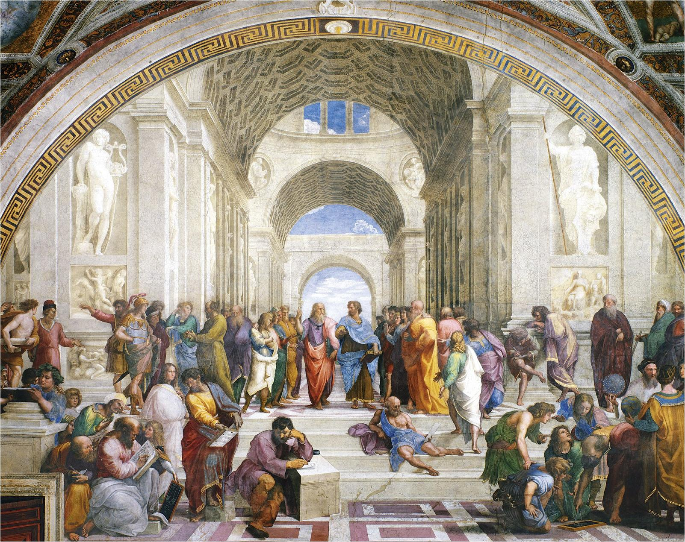

Raphael · c. 1509–1511
Vatican Palace, Vatican City
Welcome to the Virtual Museum, a digital space created to bring history, art, and culture closer to everyone. Our museum allows visitors to explore remarkable artifacts, artworks, and stories from different periods and places, all from the comfort of their own homes. Through an engaging and interactive experience, we aim to make learning about our past more accessible, interesting, and memorable. Explore the exhibits, discover the stories behind them, and take a journey through the rich heritage that has shaped our world.
Our mission is to make art and history accessible to everyone, everywhere — free from the limits of geography or time.